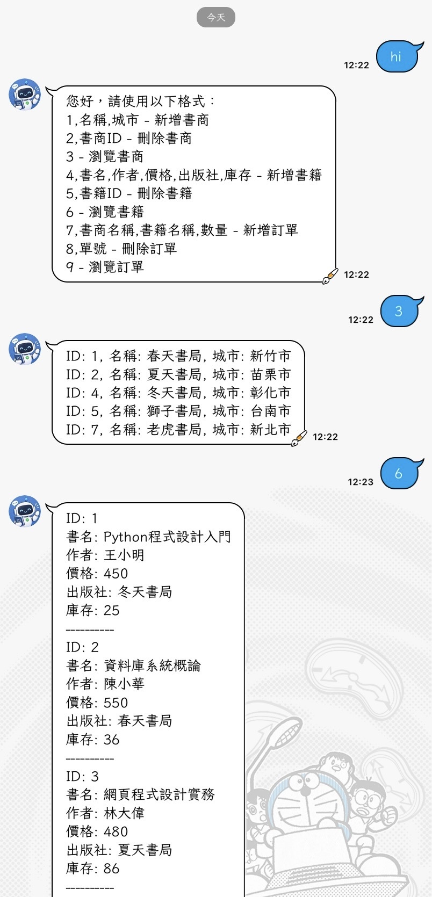
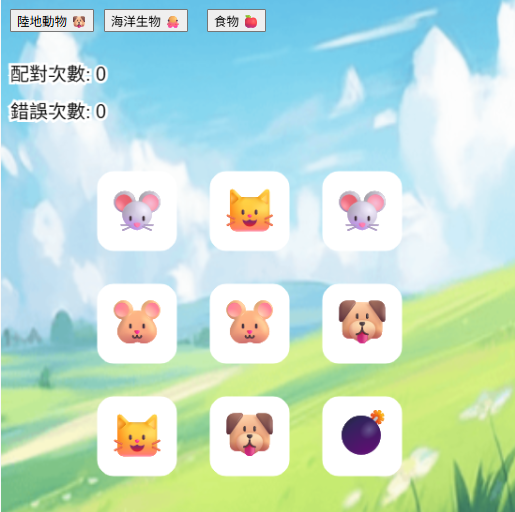

胡振惟
資訊管理學系｜資訊系統開發・資訊應用
資訊管理學系｜資訊系統開發・資訊應用
您好！我是胡振惟，畢業於國立聯合大學資訊管理學系。 在學期間，我透過課程、專題與產學合作，累積 Android 應用程式開發、藍牙通訊、資料庫應用及影像辨識等實作經驗。
在產學合作專案中，我主要負責 Android 藍牙資料接收系統的開發， 工作內容包含介面設計、藍牙資料接收與解析、資料上傳及異常處理。 近一年的開發與測試過程中，我透過 Log 紀錄追蹤系統問題、 分析異常情況，並依據測試結果調整程式邏輯，累積系統測試、問題分析與除錯經驗。
此外，我也運用 Python、Flask 與 MySQL 開發 LINE Bot 圖書管理系統，並自行設計與製作個人作品集網站。 透過不同類型的專案，我接觸了行動應用、前後端開發及資料庫應用，也逐步熟悉從功能實作到測試與調整的開發過程。
未來，我希望將所累積的實作經驗應用於實際工作， 從資訊系統維護、功能測試、問題排查及資料處理等工作中持續學習，逐步提升技術能力與實務經驗。 歡迎透過本網站進一步了解我的專案成果與技術應用。
Hello! My name is Zhen-Wei Hu, and I graduated from the Department of Information Management at National United University. During my university studies, I gained hands-on experience in Android application development, Bluetooth communication, database applications, and image recognition through coursework, projects, and industry collaboration.
In an industry collaboration project, I was primarily responsible for developing an Android-based Bluetooth data reception system. My work included interface design, Bluetooth data reception and parsing, data uploads, and error handling. Through nearly a year of development and testing, I learned to use log records to investigate system issues, analyze abnormal behavior, and adjust program logic based on test results. This experience helped me develop practical skills in system testing, troubleshooting, and problem analysis.
In addition, I developed a LINE Bot book management system using Python, Flask, and MySQL, and independently designed and built my personal portfolio website. Through these projects, I gained experience in mobile applications, front-end and back-end development, and database applications. I also became more familiar with the process of implementing, testing, and refining software features.
I hope to apply my project experience in a professional environment and continue developing my skills through system maintenance, functional testing, troubleshooting, and data processing. I invite you to explore this website to learn more about my projects and technical experience.
資訊管理學系 ｜ 2023.9 - 2026.6
學習程式設計、資料庫管理與系統分析等資訊專業， 並結合管理相關知識，培養資訊應用、系統開發及問題分析能力。
參與影像辨識系統專題，並透過產學合作進行 Android 藍牙資料接收系統的開發與測試，累積資料解析、系統整合、 異常追蹤及程式除錯等實作經驗。
資訊傳播學系 ｜ 2022.9 - 2023.6
修習資訊傳播、影像設計與多媒體製作相關課程， 了解數位內容的製作與設計流程，並培養視覺表達及創意發想能力。
使用 Photoshop 進行照片修圖與影像合成， 並使用 Illustrator 設計 Logo 及品牌視覺，累積影像編輯與平面設計實作經驗。
產學合作專案 ｜ 2025 – 2026
參與近一年的產學合作開發，主要負責 Android App 的設計與實作， 建立藍牙感測資料接收、解析及網路上傳流程。
專題開發成員 ｜ 2024 – 2026
參與抽菸偵測系統開發，主要負責 MediaPipe 影像處理模組， 並協助影像辨識模型整合與系統功能設計。

透過 Android App 接收感測裝置傳送的資料， 完成資料解析、彙整與伺服器上傳，建立從裝置通訊到資料傳輸的完整流程。
掃描裝置並接收感測資料。
解析封包內容，整理感測資料及相關資訊。
透過 HTTP 傳送資料，並處理上傳失敗與重試流程。

結合電腦視覺與影像辨識技術，開發抽菸行為偵測系統， 將攝影機畫面呈現於網頁端，供管理人員查看監測畫面及辨識結果。
將攝影機畫面串流至網頁端，供管理人員即時查看。
整合三種影像辨識模型，判斷抽菸行為。
偵測到抽菸行為時，保存相關影像及時間資訊，並通知管理人員。

結合 LINE Bot、Flask 與 MySQL，開發可透過 LINE 進行互動的圖書管理系統。後端串接資料庫管理書籍、書商及訂單資料， 並整合 Webhook 與訊息處理流程，實現使用者互動與資料管理功能。
接收並處理使用者訊息，提供圖書查詢與互動功能。
管理書籍、書商及訂單等資料，實作新增、查詢、修改與刪除。
透過 Flask 處理 Webhook，串接 LINE Messaging API 與 MySQL。

使用 p5.js 製作可於瀏覽器操作的配對遊戲，設計多種關卡與遊戲機制， 結合配對判定、倒數計時及狀態管理，並加入不同主題與特殊道具， 增加遊戲的互動性與挑戰性。
提供不同配對數量的關卡，並依據玩家操作判定配對結果。
實作預覽時間、倒數計時及遊戲進行狀態控制。
加入炸彈、護盾及不同遊戲主題，豐富互動體驗。
結合資訊系統開發、問題排查與資料處理經驗， 持續累積系統維護及資訊應用能力。
具備資料整理、文件編輯與簡報製作等文書應用能力。
透過紀錄追蹤系統異常，分析問題原因並驗證修正結果。
具備後端程式、資料庫操作及系統功能開發經驗。
曾參與行動應用、藍牙資料接收及影像辨識相關專案。
透過專業認證累積程式設計與管理相關知識。
 2025
2025
中華民國物流協會
 2026
2026
Certiport

參與學術交流活動，拓展專業視野。

記錄系上專題成果展示與交流經驗。